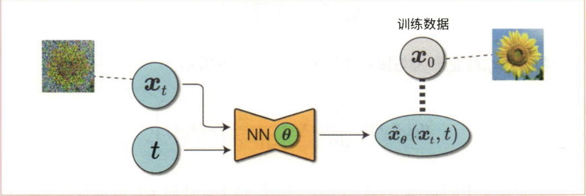
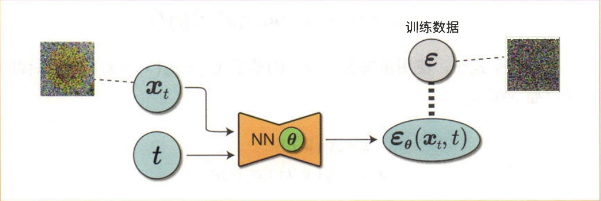
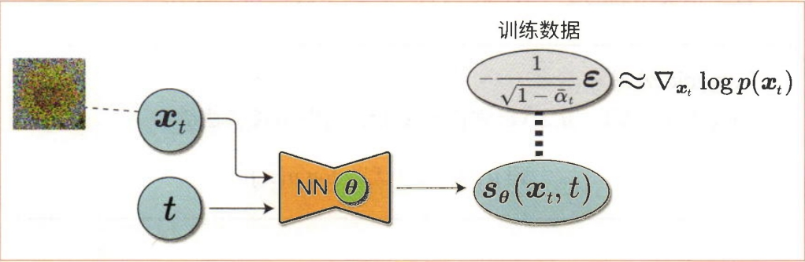

其中均值 \(\mu_q(x_t, x_0)\) 和方差 \(\Sigma_q(t)\) 分别为:
\[\mu_q(x_t, x_0) = \frac{\sqrt{\alpha_t}(1 - \bar{\alpha}_{t-1}) x_t + \sqrt{\bar{\alpha}_{t-1}}(1 - \alpha_t) x_0}{1 - \bar{\alpha}_t}, \quad \Sigma_q(t) = \sigma_q^2(t) I = \frac{(1 - \alpha_t)(1 - \bar{\alpha}_{t-1})}{1 - \bar{\alpha}_t} I \tag{1}\]
在我们的情况下，我们可以将两个高斯分布的方差设置为完全匹配，优化KL散度项简化为最小化两个分布均值之间的差异:
\[ D_{KL}(q(x_{t-1}|x_t, x_0) \| p_\theta(x_{t-1}|x_t)) = \frac{1}{2\sigma_q^2(t)} \|\mu_\theta - \mu_q\|_2^2 \tag{2}\]
首先，\(\mu_q(x_t, x_0)\) 的数学表达式如下所示（再次列出）:
\[\mu_q(x_t, x_0) = \frac{\sqrt{\alpha_t}(1 - \bar{\alpha}_{t-1}) x_t + \sqrt{\bar{\alpha}_{t-1}}(1 - \alpha_t) x_0}{1 - \bar{\alpha}_t} \tag{3}\]
换句话说，我们想要优化一个 \(\mu_\theta(x_t, t)\)，使其匹配 \(\mu_q(x_t, x_0)\)，然后将 \(\mu_\theta(x_t, t)\) 调整为与上式相同的形式，如下所示:
\[\mu_\theta(x_t, t) = \frac{\sqrt{\alpha_t}(1 - \bar{\alpha}_{t-1}) x_t + \sqrt{\bar{\alpha}_{t-1}}(1 - \alpha_t) \hat{x}_\theta(x_t, t)}{1 - \bar{\alpha}_t} \tag{4}\]
如公式4所示，我们将 \(\mu_\theta(x_t, t)\) 调整为与公式3相同的形式。而 \(\hat{x}_\theta(x_t, t)\) 表示由神经网络推断的值。我们在这里所做的调整是使神经网络推断的是 \(\mu_q(x_t, x_0)\) 的一部分，而不是预测整个公式3。比较公式3和公式4，可以看到 \(\hat{x}_\theta(x_t, t)\) 和 \(x_0\) 是相对应的部分。
此外，这种情况下的KL散度可以按照以下式子进行计算:
\[D_{KL}(q(x_{t-1}|x_t, x_0) \| p_\theta(x_{t-1}|x_t)) = \frac{1}{2\sigma_q^2(t)} \|\mu_\theta(x_t, t) - \mu_q(x_t, x_0)\|_2^2\]
\[= \frac{1}{2\sigma_q^2(t)} \cdot \frac{\bar{\alpha}_{t-1}(1 - \alpha_t)^2}{(1 - \bar{\alpha}_t)^2} \|\hat{x}_\theta(x_t, t) - x_0\|_2^2 \tag{5}\]
由于KL散度是损失函数，而根据上式，损失函数可以表示为 \(\hat{x}_\theta(x_t, t)\) 和 \(x_0\) 之间的平方误差，因此，神经网络以 \(x_0\) 作为训练数据进行训练，使得输出的 \(\hat{x}_\theta(x_t, t)\) 与 \(x_0\) 相同。

图1 以 \(x_0\) 为训练数据的扩散模型
总之，这里神经网络所执行的处理是:从数据 \(x_t\) 和时刻 \(t\) 恢复没有噪声的原始数据 \(x_0\)。这就是2015年提出的DPM模型。
还可以考虑神经网络的另一种构成方法。这种方法将 \(q(x_t|x_0)\) 表示为以下式子:
\[q(x_t|x_0) = \mathcal{N}(x_t; \sqrt{\bar{\alpha}_t} x_0, (1 - \bar{\alpha}_t) I) \tag{6}\]
另外，可以将基于 \(q(x_t|x_0)\) 采样的样本表示为以下式子:
\[x_t = \sqrt{\bar{\alpha}_t} x_0 + \sqrt{1 - \bar{\alpha}_t} \epsilon, \quad \epsilon \sim \mathcal{N}(0, I) \tag{7}\]
由此，有以下式子成立:
\[x_0 = \frac{x_t - \sqrt{1 - \bar{\alpha}_t} \epsilon}{\sqrt{\bar{\alpha}_t}} \tag{8}\]
然后将上式代入公式3进行展开:
\[\mu_q(x_t, x_0) = \frac{\sqrt{\alpha_t}(1 - \bar{\alpha}_{t-1}) x_t + \sqrt{\bar{\alpha}_{t-1}}(1 - \alpha_t) x_0}{1 - \bar{\alpha}_t}\]
\[= \frac{\sqrt{\alpha_t}(1 - \bar{\alpha}_{t-1}) x_t + \sqrt{\bar{\alpha}_{t-1}}(1 - \alpha_t) \cdot \frac{x_t - \sqrt{1 - \bar{\alpha}_t} \epsilon}{\sqrt{\bar{\alpha}_t}}}{1 - \bar{\alpha}_t}\]
\[= \frac{1}{\sqrt{\alpha_t}} x_t - \frac{1 - \alpha_t}{\sqrt{1 - \bar{\alpha}_t} \sqrt{\alpha_t}} \epsilon \tag{9}\]
将 \(\mu_\theta(x_t, t)\) 变形为与该式类似的式子，如下所示:
\[\mu_\theta(x_t, t) = \frac{1}{\sqrt{\alpha_t}} x_t - \frac{1 - \alpha_t}{\sqrt{1 - \bar{\alpha}_t} \sqrt{\alpha_t}} \hat{\epsilon}_\theta(x_t, t) \tag{10}\]
上面式子中的 \(\hat{\epsilon}_\theta(x_t, t)\) 表示神经网络的输出。此时KL散度按以下式子进行计算:
\[D_{KL}(q(x_{t-1}|x_t, x_0) \| p_\theta(x_{t-1}|x_t)) = \frac{1}{2\sigma_q^2(t)} \|\mu_\theta(x_t, t) - \mu_q(x_t, x_0)\|_2^2\]
\[= \frac{1}{2\sigma_q^2(t)} \cdot \frac{\bar{\alpha}_{t-1}(1 - \alpha_t)^2}{\bar{\alpha}_t(1 - \bar{\alpha}_t)} \|\hat{\epsilon}_\theta(x_t, t) - \epsilon\|_2^2 \tag{11}\]
结果是 \(\hat{\epsilon}_\theta(x_t, t)\) 和 \(\epsilon\) 之间的平方误差。因此，神经网络 \(\hat{\epsilon}_\theta(x_t, t)\) 预测了基于 \(x_0\) 生成 \(x_t\) 时使用的噪声分量 \(\epsilon\)。

图2 使用 \(\epsilon\) 作为训练数据的扩散模型
根据参考文献可知，预测噪声的模型的效果更好。这也意味着使用下面这个省略了系数的损失函数可以得到同样的结果:
\[\text{LOSS}(x_0; \theta) = \|\hat{\epsilon}_\theta(x_t, t) - \epsilon\|_2^2 \tag{12}\]
这就是2020年，Ho et al 等人发表了论文 DPM 的改进模型 “Denoising Diffusion Probabilistic Models”提出的改进版的DPM模型，被称为DDPM模型。
在2019年，宋旸等人提出了一种基于分数的扩散模型，实际上这种基于分数的扩散模型和本章基于马尔可夫的扩散模型是等价的，论文给出了这种等价说明。后续的章节我们再单独详细的介绍宋旸论文中基于分数扩散模型的原理，这里我们暂且按照相关内容给出和DDPM等价的分数模型。
首先需要一个关于Tweedie公式（Tweedie’s Formula）的背景知识。在统计学中，经常需要根据观测样本估计一个概率分布的未知参数，估计算法有很多，比如最大似然估计、贝叶斯估计等等。Tweedie公式是一种估计指数族分布均值参数的方法。高斯分布就是指数族分布中的一种，所以可以用Tweedie公式估计高斯分布的均值参数。这里省略Tweedie公式的证明过程，只关注怎么使用Tweedie公式。
假设有一个（多元）高斯随机变量 \(x \sim \mathcal{N}(x; \mu, \Sigma)\)，Tweedie公式可以写为:
\[\mathbb{E}[\mu|x] = x + \Sigma \nabla_x \log p(x) \tag{13}\]
其中等式左边 \(\mathbb{E}[\mu|x]\) 表示:有 \(x\) 的样本条件下，\(\mu\) 的期望，直观地理解，就是用 \(x\) 的样本估计 \(\mu\) 的值。等式右边就是具体计算方式，在这里只需要 \(x\) 的一条样本就可以。\(\log p(x)\) 就是观测样本的对数似然，\(\nabla_x \log p(x)\) 就是观测样本的对数似然的一阶导数，又名梯度，也叫Stein分数（Stein score），简称分数(score)。
注意，还有另外一个分数，Fisher分数，二者不太一样，不要搞混了。Fisher分数是对数似然关于参数的梯度 \(\nabla_\theta \log p(x|\theta)\)；Stein分数是对数似然关于观测变量（样本）的梯度 \(\nabla_x \log p(x)\)。
我们知道在前向过程中，\(x_t\) 的边际分布（marginal distribution）是一个高斯分布:
\[q(x_t|x_0) = \mathcal{N}(x_t; \sqrt{\bar{\alpha}_t} x_0, (1 - \bar{\alpha}_t) I) \tag{14}\]
其中 \(x_t\) 的边际分布为 \(p(x_t)\)。虽然我们知道给定 \(x_0\) 时 \(x_t\) 的均值是 \(\sqrt{\bar{\alpha}_t} x_0\)，但我们可以利用Tweedie公式，从 \(x_t\) 的样本直接估计这个均值参数。根据Tweedie公式（公式13），我们有:
\[\mathbb{E}[\sqrt{\bar{\alpha}_t} x_0 | x_t] = x_t + (1 - \bar{\alpha}_t) \nabla_{x_t} \log p(x_t) \tag{15}\]
这里我们记 \(\nabla_{x_t} \log p(x_t)\) 为 \(\nabla \log p(x_t)\) 以简化符号。根据Tweedie公式，对于从均值 \(\mu_{x_t} = \sqrt{\bar{\alpha}_t} x_0\) 生成的高斯分布，最佳估计为:
\[\sqrt{\bar{\alpha}_t} x_0 = x_t + (1 - \bar{\alpha}_t) \nabla \log p(x_t) \tag{16}\]
对上式进行移项可以得到:
\[x_0 = \frac{x_t + (1 - \bar{\alpha}_t) \nabla \log p(x_t)}{\sqrt{\bar{\alpha}_t}} \tag{17}\]
这个关系式是一个分数表达 \(x_0\) 的等式。现在回到逆过程中的真实分布 \(q(x_{t-1}|x_t, x_0)\)，它的均值 \(\mu_q(x_t, x_0)\) 在公式3中已经给出，这里把公式17带入进去:
\[\mu_q(x_t, x_0) = \frac{\sqrt{\alpha_t}(1 - \bar{\alpha}_{t-1}) x_t + \sqrt{\bar{\alpha}_{t-1}}(1 - \alpha_t) x_0}{1 - \bar{\alpha}_t}\]
\[= \frac{\sqrt{\alpha_t}(1 - \bar{\alpha}_{t-1}) x_t + \sqrt{\bar{\alpha}_{t-1}}(1 - \alpha_t) \cdot \frac{x_t + (1 - \bar{\alpha}_t) \nabla \log p(x_t)}{\sqrt{\bar{\alpha}_t}}}{1 - \bar{\alpha}_t}\]
\[= \frac{\sqrt{\alpha_t}(1 - \bar{\alpha}_{t-1}) x_t + (1 - \alpha_t) \cdot \frac{x_t + (1 - \bar{\alpha}_t) \nabla \log p(x_t)}{\sqrt{\alpha_t}}}{1 - \bar{\alpha}_t}\]
\[= \frac{\sqrt{\alpha_t}(1 - \bar{\alpha}_{t-1}) x_t}{1 - \bar{\alpha}_t} + \frac{(1 - \alpha_t) x_t}{(1 - \bar{\alpha}_t) \sqrt{\alpha_t}} + \frac{(1 - \alpha_t)(1 - \bar{\alpha}_t) \nabla \log p(x_t)}{(1 - \bar{\alpha}_t) \sqrt{\alpha_t}}\]
\[= \left(\frac{\sqrt{\alpha_t}(1 - \bar{\alpha}_{t-1})}{1 - \bar{\alpha}_t} + \frac{1 - \alpha_t}{(1 - \bar{\alpha}_t) \sqrt{\alpha_t}}\right) x_t + \frac{1 - \alpha_t}{\sqrt{\alpha_t}} \nabla \log p(x_t)\]
\[= \frac{\alpha_t (1 - \bar{\alpha}_{t-1}) + 1 - \alpha_t}{(1 - \bar{\alpha}_t) \sqrt{\alpha_t}} x_t + \frac{1 - \alpha_t}{\sqrt{\alpha_t}} \nabla \log p(x_t)\]
\[= \frac{\alpha_t - \bar{\alpha}_t + 1 - \alpha_t}{(1 - \bar{\alpha}_t) \sqrt{\alpha_t}} x_t + \frac{1 - \alpha_t}{\sqrt{\alpha_t}} \nabla \log p(x_t)\]
\[= \frac{1 - \bar{\alpha}_t}{(1 - \bar{\alpha}_t) \sqrt{\alpha_t}} x_t + \frac{1 - \alpha_t}{\sqrt{\alpha_t}} \nabla \log p(x_t)\]
\[= \frac{1}{\sqrt{\alpha_t}} x_t + \frac{1 - \alpha_t}{\sqrt{\alpha_t}} \nabla \log p(x_t) \tag{18}\]
重新按照这个形式设定参数化分布 \(p_\theta(x_{t-1}|x_t)\) 均值 \(\mu_\theta(x_t, t)\) 的表达式:
\[\mu_\theta(x_t, t) = \frac{1}{\sqrt{\alpha_t}} x_t + \frac{1 - \alpha_t}{\sqrt{\alpha_t}} s_\theta(x_t, t) \tag{19}\]
现在 \(s_\theta(x_t, t)\) 是模型学习预测的内容，相当于模型直接预测的是分数 \(\nabla \log p(x_t)\)。
最后我们推导下目标函数ELBO中相关的KL散度:
\[D_{KL}(q(x_{t-1}|x_t, x_0) \| p_\theta(x_{t-1}|x_t)) = \frac{1}{2\sigma_q^2(t)} \|\mu_\theta(x_t, t) - \mu_q(x_t, x_0)\|_2^2\]
\[= \frac{1}{2\sigma_q^2(t)} \left\|\frac{1}{\sqrt{\alpha_t}} x_t + \frac{1 - \alpha_t}{\sqrt{\alpha_t}} s_\theta(x_t, t) - \frac{1}{\sqrt{\alpha_t}} x_t - \frac{1 - \alpha_t}{\sqrt{\alpha_t}} \nabla \log p(x_t)\right\|_2^2\]
\[= \frac{1}{2\sigma_q^2(t)} \left\|\frac{1 - \alpha_t}{\sqrt{\alpha_t}} (s_\theta(x_t, t) - \nabla \log p(x_t))\right\|_2^2\]
\[= \frac{1}{2\sigma_q^2(t)} \cdot \frac{(1 - \alpha_t)^2}{\alpha_t} \|s_\theta(x_t, t) - \nabla \log p(x_t)\|_2^2 \tag{20}\]
最后的目标函数仍然是均方误差的形式，和原始扩散模型以及基于噪声的扩散模型是高度一致的。公式中的 \(\nabla \log p(x_t)\) 是梯度的真实值，这个可以直接计算得到，PyTorch中可以计算指定变量的梯度。\(s_\theta(x_t, t)\) 代表一个神经网络模型，它去学习和预测分数函数 \(\nabla \log p(x_t)\)，即对于任意噪声水平 \(t\)，在数据空间中 \(x_t\) 的梯度。
接下来看下梯度和噪声的关系，结合公式16和公式8可得:
\[\nabla_{x_t} \log q(x_t|x_0) = \nabla_{x_t} \log q(x_t|x_0) = -\frac{1}{1 - \bar{\alpha}_t} \cdot \frac{x_t - \sqrt{\bar{\alpha}_t} x_0}{\sqrt{1 - \bar{\alpha}_t}} = -\frac{\epsilon}{\sqrt{1 - \bar{\alpha}_t}} \tag{20}\]
我们知道梯度的方向，是函数极值的方向。梯度 \(\nabla_{x_t} \log q(x_t|x_0)\) 指向的是对数概率函数 \(\log q(x_t|x_0)\) 概率密度最大的方向，它和添加的噪声相差一个负号，正好是相反的，梯度的方向是噪声的反方向，这十分符合直觉。

图3 使用分数作为训练数据的扩散模型